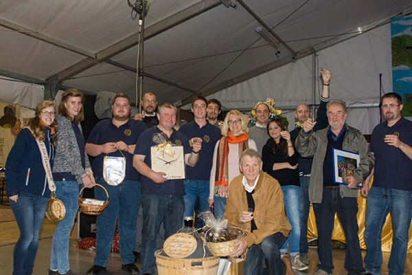
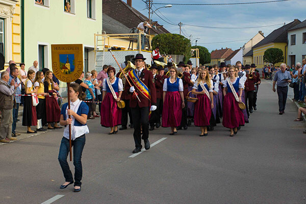
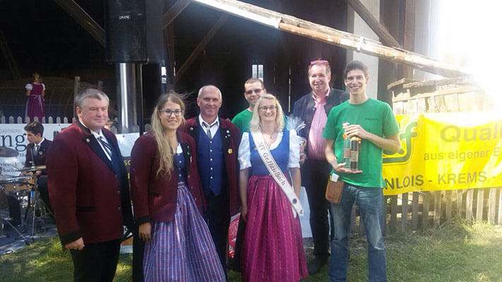

News
Italienisches Flair mit Waldviertler Blasmusik
Auf einem italienschen Kastanienfest aufspielen – das schafft auch nicht jeder Waldviertler Musikverein! Der Ausflug des Musikverein Großhaselbach hat heuer ins italienische Pedderoba geführt.
Wenn jemand eine Reise tut, dann kann er was erzählen – so auch der Musikverein Großhaselbach, der rund um den Nationalfeiertag auf Musikausflug und Konzertreise in Italien war. Initiiert wurde die Reise von Marketenderin Caterine Gabrielli. Die Liebe führte sie vor einigen Jahren nach Großhaselbach. Ihrem italienischen Verein „Banda Musicale di Pederobba“ ist sie aber nach wie vor treu geblieben und lud ihre Kollegen deshalb ein, doch einen Austausch zu wagen und beim Kastanienfest in Pederobba aufzuspielen.
Knapp 60 Musikanten und Freunde des Musikvereins folgen ihren Aufruf und so stand am 23. Oktober als erster Programmpunkt das italienische Lebensgefühl in der Kanal- und Liebesstadt Venedig am Plan. Neben einer ausführlichen Stadtbesichtigung und einem traditionellen italienischen Mittagessen durfte ein Besuch der zahlreichen Eissalons der Stadt nicht fehlen. Die Region von Venedig ist auch eine sehr bekannte Weinregion, ein Anlass im Weingut „Villa Sandi“ die Herstellung von italienischem Prosecco und Rotwein kennenzulernen. Die Erzeugnisse wurden von der Reisegruppe verkostet, dazu wurden passend heimische Wurst- und Käsesorten gereicht. Gestärkt ging es weiter nach Cittadella, einer altertümlichen Stadt, die von einer fast 1,5 km langen Stadtmauer umgeben ist. Am Kastanienfest in Pederobba durften die Musikanten dann erstmals auf italienischen Boden ihr Können in einem kurzen Konzert unter Beweis stellen. Ebenso wurden die ersten Maroni der Saison verkostet und gemeinsam mit den mitreisenden Fans und Festbesuchern das italienische Flair tief eingeatmet.
Der große Auftritt folgte aber erst am Sonntag. Nach vormittäglichen Besichtigungen eines Tempels und Museums und einem Mittagessen mit hervorragenden Pizzakreationen durfte der Verein am großen Abschlussaufmarsch des Festes mitziehen. Im Marschschritt ging es durch das Stadtzentrum von Pederobba zum großen Festzelt, wo alle teilnehmenden Kapellen ein Konzert darboten. Der krönende Abschluss war das Gesamtkonzert, bei welchem gemeinsam mit den drei anwesenden italienischen Kapellen der Marsch Aquila und der Radetzkymarsch interpretiert wurde. Die Gastgeberkapelle, die Banda musicale di Pederobba, lud zum gemeinsamen Feiern. Besonders begeistert waren die italienischen Besucher übrigens von den heimischen Tanzkünsten, die gemeinsam mit den italienischen Kollegen dargeboten wurden.
Am letzten Tag der Reise wurde noch einmal ein italienisches Unternehmen besucht, welches Cornetti, die italienische Variante der Croissants herstellt. Bepackt mit Mitbringseln und vielen Erinnerungen und neuen Freundschaften ging es dann in die Heimat. Nächstes Jahr werden die Musikanten aus Pederobba dann Großhaselbach besuchen und italienisches Flair ins Waldviertel bringen.
Voller Marsch voraus!
Der Probenaufwand hat sich ausgezahlt - Sehr guter Erfolg für den Musikverein Großhaselbach! Aus Termingründen nahm der MVGH dieses Jahr an der Marschmusikbewertung der BAG Waidhofen/Horn am vergangenen Samstag, den 19. September, in Weitersfeld teil. Unter Stabführer Florian Weixelbraun waren wir in Stufe D angetreten, gespielt und marschiert wurde der Marsch „Freude zur Musik“. Mit 82,00 Punkten schrammten wir nur knapp am Ausgezeichneten Erfolg ab 83,00 Punkten vorbei. Auch einige „Marschmusikbewertungs-Debütanten“ waren wieder in unseren Reihen zu finden, auf welche wir natürlich ob der Leistung besonders stolz sind!
MVGH on Tour im Straßertale
Nachdem die Musikkapelle Straß im Straßertale bei unserem diesjährigen Tag der Blasmusik einen wundervollen Frühschoppen gestaltet hat, stand nun am vergangenen Sonntag, dem 13. September, das Retourspielen an. Dazu wurden wir von unseren Freunden zu ihrem Musikerfest´l eingeladen, das wir mit einem Frühschoppen ebenfalls musikalisch umrahmen durften. Die Musikanten und die treuesten Fans rückten gemeinsam mit einem Bus der Fa. Mülleder ins Straßentale aus. Bei traumhaftem Wetter wurde standesgemäß eine Feldmesse zelebriert, ehe wir mit Marsch und Polka den Frühschoppen schwungvoll begannen. Natürlich durften auch unsere altbewährten „Frühschoppen-Klassiker“ wie das Wickie-Medley oder der Böhmische Traum nicht fehlen. Alles in allem bleibt uns nur zu sagen: Top Stimmung, tolle Gastgeber – es hat uns sehr viel Spaß gemacht!
Da blieb uns fast die Luft weg!
Aus einer Wirtshauswette von Obmann Erwin Franta und Wirt Werner Zlabinger ist am 1. Mai ein gelungener Rekordversuch geworden. 37 Musikantinnen und Musikanten spielten im mit nur 2 mal 2 Meter kleinsten Gastgarten der Welt in Schwarzenau vor der Kaminstube Hahnl auf! Bürgermeister Karl Elsigan moderierte die Veranstaltung, die einem guten Zweck diente. Das von Zwettler Bier gesponsorte Bierfass wurde gegen Spenden ausgeschenkt, weitere Sponsoren erhöhten den Betrag - somit wurden knapp 2000 Euro gesammelt.
Nächster Auftritt
Neujahrsempfang Gemeinde Schwarzenau
ORT: Schwarzenau
Wann: 15.01.2016
Zeit: 20:00 Uhr
Nächste Probe
Gesamtprobe
ORT: Musikhaus Groß Haselbach
Wann: 15.01.2016
Zeit: 20:00 Uhr